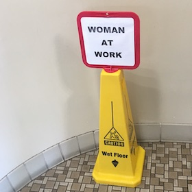

Recent Projects

TODO :)
I am a mission driven Frontend software engineer with a particular passion for building tools that make it easier to get things done. I will always go to bat for the user, and I am constantly thinking about what can be done to improve their experience.
With a background in Sociology and Cyborg Anthropology, I have a keen eye for opportunities that will improve human-computer interaction. Providing customer service early in my career got me where I am today: highly empathetic to users and the teams that serve them.